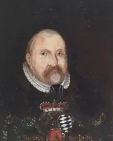
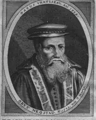
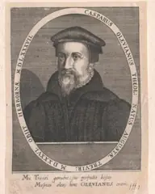
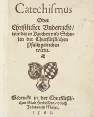
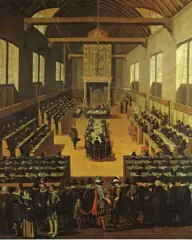

真实的历史舞台
一部要理问答，诞生于莱茵—内卡河谷的选帝侯宫廷；一部信条，写于南尼德兰的逼迫与火刑之下；一部信经，定于荷兰共和国的国际大会。三条线最终在多德雷赫特汇合。
📚一、故事线：三部信条如何汇成“三项联合信条”
⏳二、时间线（1386–2015）：五个时期 · 点击圆点跳转
1.📊 五个时期一览（1650 年后轴线压缩）
大圆点＝与某个主日直接相关的事件。
德国现存最古老的大学，后成为改革宗神学重镇。
维滕堡，宗教改革开端；“唯独恩典、唯独信心”的问题成为第60–64问的背景。
茨温利在市议会前以圣经辩论，苏黎世走上改教之路。
格列伯等人施行重洗，重洗派运动兴起——第74问婴儿洗礼的论敌之一。
路德与茨温利在十五条中同意十四条，唯独在圣餐上分裂——海德堡日后要处理的核心议题。
路德宗的信仰告白，帝国内合法新教的标准。
日内瓦改革宗神学的系统基础。
长老与执事、教会纪律的模式；俄利维亚努后来在普法尔茨推动类似的纪律。
罗马教对改教运动的正式回应，重申弥撒献祭与功德；第80问（弥撒）在 1563 年第二、三版中加入并扩充，一般认为与此相关。
加尔文与布林格就圣餐达成一致（Consensus Tigurinus），形成改革宗共同的圣餐观。
“教随国定”：只承认罗马教与路德宗——改革宗无合法地位。
普法尔茨正式成为新教领地，海德堡成为各派新教交汇之地。
赫斯胡斯与克莱比茨公开冲突；腓德烈罢免双方，亲自研读圣经。
曾师从墨兰顿，又在苏黎世受教于彼得·马蒂尔。
以乌尔西努的《小要理问答》《大要理问答》为基础，委员会共同完成；12 月审议。
1 月 19 日腓德烈三世作序；同年第二、三版加入第80问并扩充；随后编入教会规章，分为 52 主日。
腓德烈三世在皇帝面前为要理问答辩护，表示愿意接受圣经的纠正。
路德维希六世恢复路德宗，乌尔西努转往诺伊施塔特；1583 年改革宗在普法尔茨恢复。
其要理问答讲义后整理为著名的《海德堡要理问答注释》。
为受逼迫的南尼德兰信徒写下信条，次年抄本被投入图尔奈城堡并呈送腓利二世。
8 月起各地教堂圣像被毁（参第97–98问论圣像）；同年荷兰文要理问答附于《日内瓦诗篇》出版。
5 月 31 日于瓦朗谢讷被处绞刑。
尼德兰起义反抗西班牙哈布斯堡统治。
流亡的荷兰改革宗教会采纳《比利时信条》与《海德堡要理问答》，并订立长老会制度。
北方各省宣布不再效忠腓利二世，荷兰共和国逐渐成形。
莱顿大学的争论扩大为全国性冲突。
向荷兰议会提出：有条件的拣选、普遍的救赎、可抗拒的恩典、不确定的坚忍等。
1618 年 11 月 13 日至 1619 年 5 月 9 日，有外国代表出席；采纳《多特信经》，确认比利时信条与海德堡要理问答。
5 月 13 日——神学争论与政治斗争交织的悲剧性结局。
普法尔茨图书馆随后被运往罗马。
英伦长老会改革宗的信条体系，与三项联合信条在教义上高度一致。
改革宗首次在帝国内获得法律承认。
回归三项联合信条的教会更新运动。
三项联合信条随荷兰移民扎根北美（另有 Heritage Reformed、PRCA 等）。
中文三项联合信条、普世信经、仪文与教会规章出版（本站所引文本来源）。
🗺️三、地理：交互地图 + 地点卡片（与主日相连）
底图 © OpenStreetMap；圆形区域仅为示意。时间线的“时期”按钮会同步淡化地图上不属于该时期的地点。
1.📍 地点卡片（21 处）
普法尔茨选帝侯首府；1563 要理问答在此写成。
路德与墨兰顿；乌尔西努在此求学。路德宗的基督论（基督人性无所不在）是第47–48问的论辩对象。
1529 年马尔堡会谈：圣餐上的分裂。
茨温利、布林格、彼得·马蒂尔；重洗派也在此兴起。
加尔文与《教会法令》；俄利维亚努在此受教。
1545–1563 特伦托大公会议：弥撒献祭与功德。
乌尔西努出生地。
俄利维亚努出生地，曾在此尝试改教。
1530 信条、1555 和约；1566 腓德烈三世在帝国议会为要理问答辩护。
普法尔茨接纳尼德兰难民的社区所在地。
1576 年后乌尔西努任教之地（Casimirianum）。
俄利维亚努晚年执教之地。
德布利牧养之地；1561 年信条抄本被投入城堡。
1567 年德布利殉道。
商业与印刷中心；1566 年圣像破坏运动波及此地。
1550 年起的荷兰/法语难民教会，与流亡的尼德兰改革宗网络相连。
1568 年流亡荷兰改革宗的会议。
1571 年总会：采纳比利时信条与海德堡要理问答，订立长老会制度。
阿米念任教的莱顿大学；抗辩派争论的起点。
1618–1619 多特大会，确立三项联合信条。
改革宗教会以主日下午讲解要理问答的传统地之一。
👥四、人物与图像

1.腓德烈三世（虔诚者）Frederick III
委托编写要理问答；在 1566 年奥格斯堡议会冒着失去帝国法律保护的危险为其辩护。

2.乌尔西努 Zacharias Ursinus
主要起草者，墨兰顿的学生，后接受改革宗圣餐观；其要理问答讲义是最重要的注释。

3.俄利维亚努 Caspar Olevianus
宫廷牧师，参与编写并推动教会纪律；盟约神学先驱。

4.1563 年初版书影
德文初版，正式名称为《教理问答或基督教教导》，用于普法尔茨的教会和学校。

5.多特大会 Synod of Dort
回应抗辩派，采纳多特信经，确认三项联合信条的地位。
6.海德堡城堡与内卡河谷
选帝侯宫廷所在地，莱茵—内卡地区的政治与学术中心。
图片来自 Wikimedia Commons（公有领域；城堡夜景 CC BY 4.0, Schlurcher），见 资料与致谢。
🏞️五、区域文化：六个舞台
1.🍇 选帝侯普法尔茨 Kurpfalz
- 政体
- 帝国七大选帝侯之一，首府海德堡
- 语言
- 德语（普法尔茨方言）
- 宗教
- 1556 路德宗 → 1559 后转向改革宗 → 1576 恢复路德宗 → 1583 改革宗：“教随国定”下的反复
- 经济
- 莱茵—内卡河运、葡萄园、大学与宫廷
- 与信条
- 要理问答作为《教会规章》的一部分颁布，供讲道、学校与家庭使用
2.⛰️ 瑞士城市共和国（苏黎世 · 日内瓦）
- 政体
- 城市议会治理的共和城邦
- 人物
- 茨温利、布林格、加尔文、彼得·马蒂尔
- 文化
- 学院、印刷与难民接待
- 与信条
- 改革宗圣餐观（《苏黎世协议》1549）与教会纪律模式直接影响海德堡
3.📚 萨克森（维滕堡）
- 政体
- 萨克森选侯领地
- 人物
- 路德、墨兰顿；乌尔西努在此求学
- 宗教
- 路德宗的中心
- 与信条
- 基督人性是否无所不在的争论 → 第47–48问；圣餐 → 第78–80问
4.🔥 南尼德兰（佛兰德斯 · 瓦隆）
- 政体
- 哈布斯堡腓利二世统治，宗教裁判所
- 语言
- 法语（瓦隆）与荷兰语（佛兰德斯）；比利时信条原文为法文
- 经济
- 纺织、商贸与安特卫普印刷业
- 与信条
- “十字架下的教会”：比利时信条向君王证明改革宗信徒不是叛乱者
5.🌷 荷兰共和国
- 政体
- 联省共和国，联省议会（States General）
- 宗教
- 改革宗为公共教会，社会相对宽容
- 经济
- 商业与航运的“黄金时代”开端
- 与信条
- 1618–1619 多特大会：神学与政治（莫里斯 vs 奥尔登巴内费尔特）交织
6.🧳 流亡社区（伦敦 · 埃姆登 · 韦瑟尔 · 弗兰肯塔尔）
- 处境
- 逃离逼迫的尼德兰难民教会
- 教会
- 长老会制度在流亡中试行
- 传播
- 荷兰文要理问答与诗篇在网络中流通
- 与信条
- 1571 埃姆登总会采纳 BC + HC，为日后的三项联合信条奠基